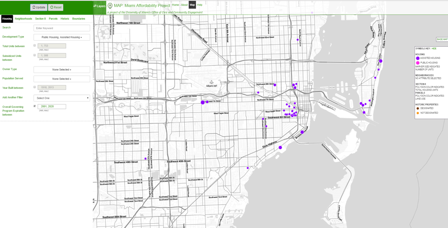

Preserve Rent-Restricted Rental Units
Under various housing programs, owners agree to maintain affordable rents for a set period, roughly 15 to 30 years, in exchange for public subsidies. When those subsidies expire, owners can either re-enroll in the affordability program or convert their properties to market-rate units.
Since 2001, Miami-Dade County has lost more than 5,000 affordable housing units from subsidy expirations, demolition, the owner pre-paying the subsidized mortgage, or foreclosure, according to the Shimberg Center at the University of Florida. Of the 74 developments lost during that time, 18 were lost during and after the 2007 recession.
Loss of Assisted Housing Units in Miami-Dade County, 2001-2017

Source: Shimberg Center, 2017.
There are roughly 2,200 assisted housing units in Miami-Dade County at risk of losing their primary subsidy by 2020. A number of affordable housing properties are clustered in Miami’s hottest markets, including Little Havana and Miami Beach, making these developments less likely to keep their affordability restrictions. Preservation of existing rent-restricted rental units is particularly important because some of these units have ‘deep’ subsidies, which ensures Miami’s lowest income households can afford to live in high-cost and emerging neighborhoods. Preservation also is important because many of these developments serve elderly populations, so if they revert to market-rate housing, the elderly run the risk of being displaced.
Assisted Housing Properties At Risk of Expiring by 2020
Note: The subsidy expiration year is tied to the most restrictive layer of funding.
Older and poorly maintained assisted housing properties are more at risk of being lost to deterioration.
Preservation Factors, City of Miami

Older buildings
46 developments were built before 1960
Upcoming expirations
Built before 1980

Maintenance issues
Deterioration resulting from deferred maintenance
Best Practices
1. Various jurisdictions have “right of first refusal” laws that allow local governments or affordable housing developers to purchase subsidized properties that are being sold to keep them as affordable housing. San Francisco’s Assisted Housing Preservation Ordinance requires the owner of a rent-restricted affordable housing development to offer mission-driven organizations like government entities and nonprofits the opportunity to purchase the development before selling or transferring the property. It also ensures that owners are paid a “fair return price.”
San Francisco Administrative Code
§ 60.8. Right of Qualified Entities to Receive Offer for Purchase of an Assisted Housing Development
d. Any owner of an assisted housing development who is required to give notice of intent to prepay and/or terminate, or to give the notice of expiration required by Section 60.9, shall not sell or otherwise transfer an assisted housing development, or any portion thereof, without giving, at least 14 months prior to the date of such sale or transfer, notice of intention to sell or transfer the development or any portion thereof (“notice of intent to sell”), to the Director of Housing and to any Qualified Entity which requests in writing such notice from the owner. The notice of intent to sell shall be signed by the owner under penalty of perjury and given by deposit in the United States Mail, first class, certified, return receipt requested and posted in a conspicuous place in the common area of the development.
2. Chicago’s multi-governmental Preservation Compact has successfully coordinated with government partners to preserve 50 assisted housing properties with 5,000 affordable housing units. Launched in 2007, the partnership identifies and directs resources to preserve at-risk properties.
3. In 2010, the National Housing Trust Enterprise Preservation Corporation acquired and preserved a deteriorated tax credit development in South Dade. The 123-unit Southpoint Crossing renovation project generated over 100 jobs, according to the National Housing Trust.
Local Solution
Establish right of first refusal laws: Local jurisdictions could establish right of first refusal laws that require the owners of a rent-restricted affordable housing development to offer government entities, nonprofits, and affordable housing developers the opportunity to purchase the development before selling or transferring the property.
Create a local Preservation Compact: Local governments, community groups, and affordable housing developers should form a Preservation Compact centered on preserving assisted properties at risk of expiring throughout Miami-Dade County. The council would identity and prioritize at risk affordable housing properties and help coordinate strategies to preserve the assisted housing stock as well as naturally occurring affordable housing.
Use financial tools to encourage preservation: Financial incentives should be targeted to preserving at-risk properties. Communities could use CDBG, HOME, and bonds to help properties meet capital needs in exchange for a long-term extension of affordability. The Florida Community Loan Fund’s Preservation Fund provides financing statewide for affordable housing developments at risk of losing federal project-based rental assistance as well as all multifamily housing in need of renovations. This fund, along with existing housing resources, could also assist local mission-driven affordable housing developers to acquire at-risk developments.
Target Area(s)
Little Havana, Miami Beach, South Dade